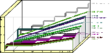
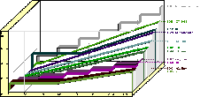

|  |
Wieviel kostet ein wie langes Telefongespräch von wo wohin um welche Zeit mit welchem Telefonprovider und warum eigentlich? Wie teuer kommt mir ein bestimmter Gesprächsmix zu verschiedenen Zielen?
Und vorallem: "Wer ist dabei der billigste?"
Das und vieles mehr erfahren Sie hier übersichtlich aufbereitet in Tabellen und Grafiken.

This calculationengine is powered by
, created by the Isdn-Crew.
HTML page and CGI program created by Leopold Tötsch,
(c) 1999 by -lt-.